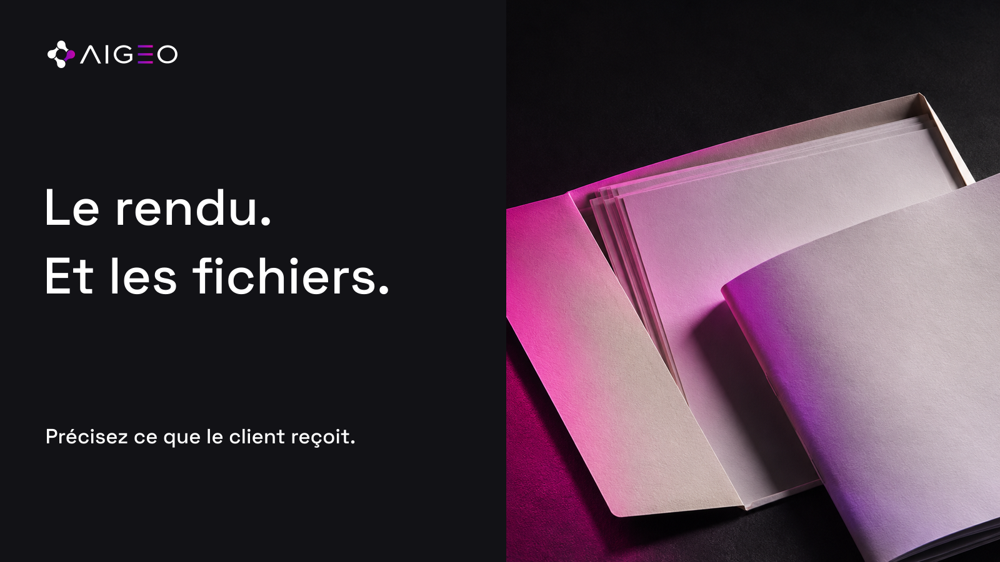
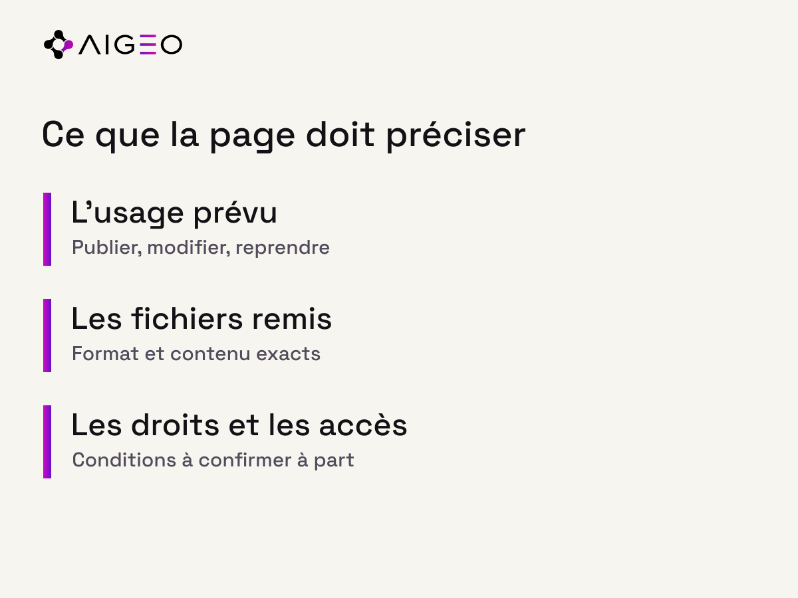

À la fin d’une prestation de création, un client peut recevoir un résultat prêt à utiliser. Il peut aussi avoir besoin de le modifier plus tard, de le décliner ou d’en confier la reprise à une autre équipe. Ces besoins ne sont pas identiques. Une description d’offre claire permet de comprendre les livrables prévus avant la mission, sans supposer ce que le contrat ou les licences n’ont pas confirmé.
Le résultat visible ne décrit pas tout ce qui est remis
Une image exportée permet de voir une composition. Un fichier de travail peut contenir d’autres éléments utiles à sa modification. Une vidéo finale et le projet qui a servi à la fabriquer ne remplissent pas la même fonction. Nous ne déduisons pas de cette différence que l’un doit toujours être fourni avec l’autre. Nous recommandons de rendre la liste prévue compréhensible.
La même question se pose dans la présentation commerciale. Un titre comme « création complète » peut sembler évident à l’équipe et laisser plusieurs interprétations au lecteur. Plutôt que de multiplier les adjectifs, nommez ce qui sera remis. Si certains éléments sont disponibles sur demande, cette possibilité doit correspondre à une pratique réelle et à des conditions confirmées.
Partir de l’usage prévu après la livraison
Le client souhaite-t-il publier le résultat tel quel, le décliner dans plusieurs formats ou le faire évoluer ? Cette question aide à préparer l’échange. Elle ne remplace pas un accord sur les droits ou les outils. Un format modifiable peut dépendre d’un logiciel, d’une police ou d’un élément tiers dont les conditions doivent être examinées séparément.
Notre méthode consiste à relier chaque livrable à un geste concret. Le fichier prêt à publier sert à une utilisation immédiate. Une version de travail peut servir à une reprise. Une notice peut aider une équipe à retrouver les éléments. Cette organisation reste une proposition éditoriale ; elle ne crée aucune obligation contractuelle générale pour les prestataires.
Écrire une liste courte, vérifiable et actuelle

Sur la page de service, indiquez les catégories de fichiers effectivement prévues et les principaux formats lorsque cela aide au choix. Si le détail dépend du projet, dites à quel moment il sera confirmé. Le lecteur n’a pas besoin d’un inventaire technique complet avant le premier échange, mais il doit pouvoir repérer ce qui nécessite une discussion.
Vérifiez ensuite la cohérence entre cette page et les documents commerciaux utilisés par l’équipe. Une ancienne brochure peut annoncer des éléments qui ne font plus partie de l’offre. Une légende sociale peut employer un terme plus large que le devis. Ces écarts demandent une vérification humaine ; une reformulation automatique ne suffit pas à décider du contenu réel de la prestation.
Lire les réponses IA sans inventer de conditions
Si une réponse IA présente une offre de création, une formule générale ne permet pas d’établir les fichiers remis. Il faut retrouver la description pertinente et conserver les inconnues. Nous ne présentons ici aucun résultat d’assistant ni expérience client. Nous expliquons une manière de lire l’offre sans transformer une supposition en condition confirmée.
Google recommande que les informations importantes soient accessibles sous forme de texte. Nous en tirons une action éditoriale limitée : écrire les éléments utiles à la compréhension de votre service. Cela ne garantit ni l’apparition de la page dans une réponse, ni l’interprétation exacte de chaque assistant.
Une question à poser à votre équipe
Prenez une prestation que vous vendez régulièrement. Demandez à deux personnes de décrire ce que le client reçoit à la fin, puis comparez leurs réponses avec la page publique. Toute différence mérite une clarification, pas une promesse ajoutée dans l’urgence. Lorsque la liste est confirmée, vous pouvez la rédiger simplement et conserver la version précédente.
Le résultat attendu est une offre plus facile à comprendre. Les effets sur les demandes, la satisfaction ou la visibilité restent à observer avec des sources réelles. Pour les droits, licences ou clauses particulières, faites vérifier les accords concernés par les personnes compétentes : le contenu marketing ne décide pas à leur place.
Sources consultées
- Google Search Central — AI features and your website · vérifiée le 2026-11-08T16:49:02.364Z
- OpenAI — Shopping with ChatGPT Search · vérifiée le 2026-11-08T16:49:02.364Z